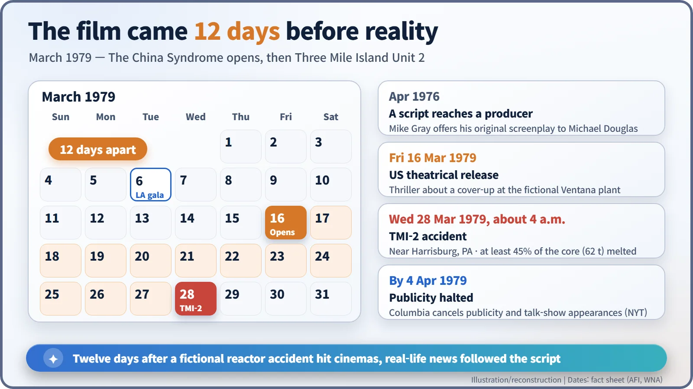
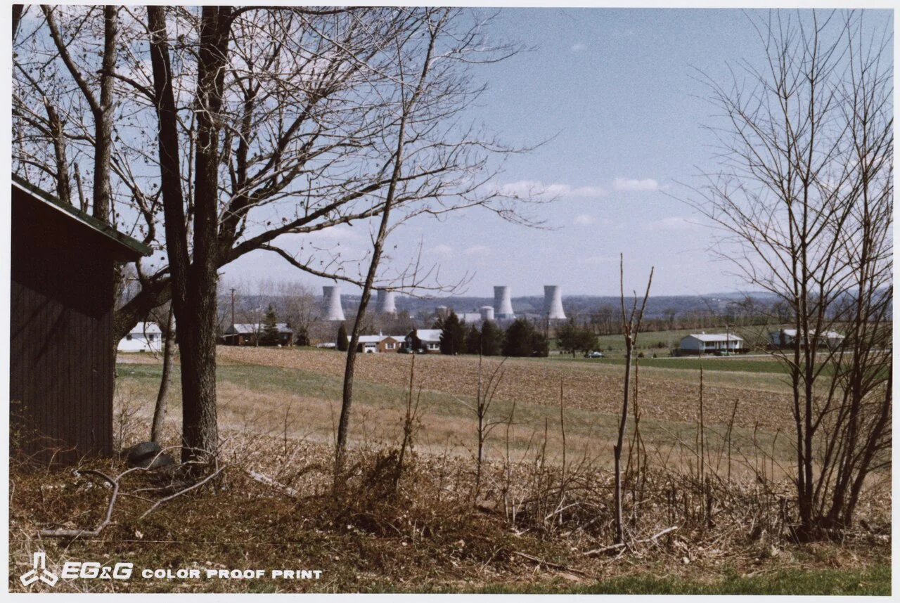
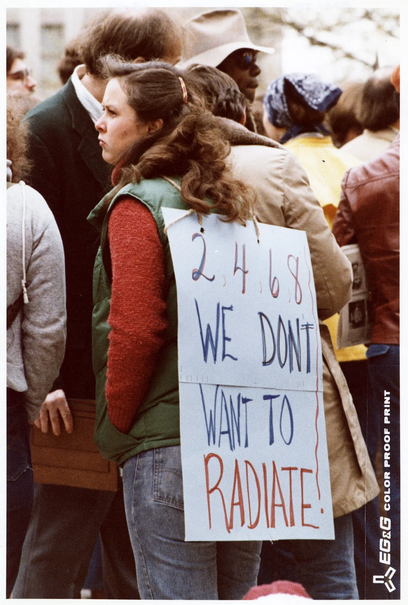
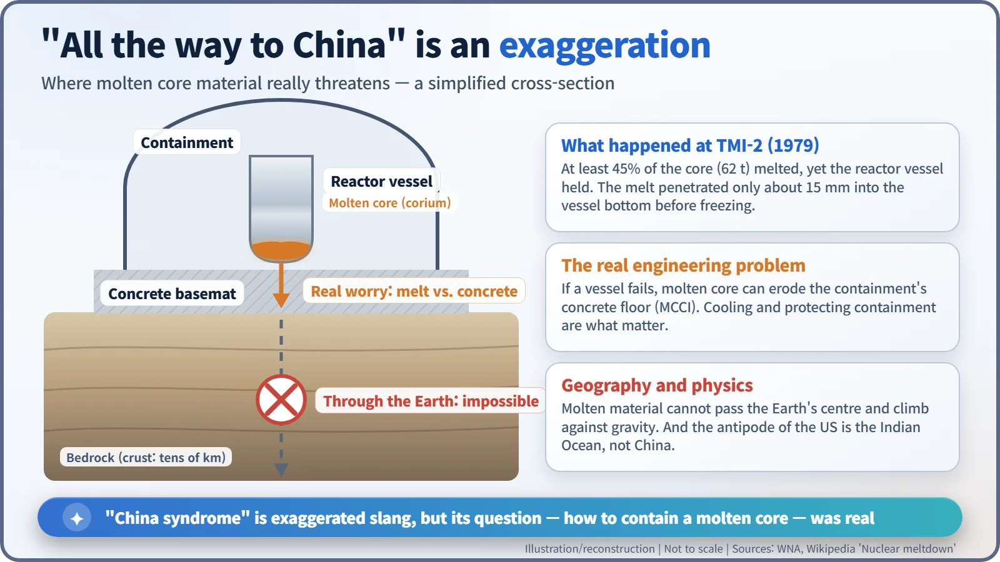

Nuclear History · 248
Twelve Days Ahead of Reality — The China Syndrome (1979) and Three Mile Island
The film opened on 16 March 1979; on 28 March a real core melt began at Three Mile Island Unit 2, and fiction and evening news suddenly looked alike.
On 16 March 1979 American cinemas opened The China Syndrome, a thriller about an accident and cover-up at a fictional nuclear plant. Twelve days later a real accident began at Three Mile Island Unit 2 in Pennsylvania. The coincidence turned a Hollywood film into part of the history of nuclear power, and its title into a phrase that still needs explaining.
A needle that lied
A control room on a cinema screen. A turbine trips, the reactor scrams, and every operator stares at one water-level gauge. The needle says the reactor is nearly overflowing. Then the shift supervisor taps the glass with a finger, and the needle drops like a stone. The water had been too low all along. You can almost hear the audience hold its breath.
That scene is from The China Syndrome, which opened in American cinemas on 16 March 1979. Twelve days later, on 28 March, a real accident began at Unit 2 of the Three Mile Island (TMI) nuclear plant. [1] [2]
Why Hollywood chose a reactor
By the late 1970s nuclear power in the United States was no longer just a symbol of the future. Hearings on emergency core cooling, a study that put numbers on accident probabilities and the critics who answered it, and site occupations by protesters all made the front pages. The China Syndrome is the best-known moment when that argument crossed into popular culture.
The project began in April 1976, when screenwriter Mike Gray offered his original script to the actor-producer Michael Douglas (born 1944). James Bridges (1936–1993) directed. Jane Fonda (born 1937) played television reporter Kimberly Wells, Jack Lemmon (1925–2001) played shift supervisor Jack Godell, and Douglas played her cameraman. [1]
A news crew filming a feature at the fictional Ventana plant near Los Angeles secretly records an emergency in the control room. Godell later discovers that the construction contractor reused the same weld X-ray images to pass inspections, and the company tries to bury it. The filmmakers did their homework: the control-room set was built from photographs taken inside the Trojan nuclear plant in Oregon, and the stuck gauge that misleads the operators is said to be modelled on a real 1970 incident at the Dresden plant near Chicago. [1]

Twelve days later, the news followed the script
The industry pushed back as soon as the film opened. The Edison Electric Institute, the utilities' trade association, issued a statement listing what it called inaccuracies in technology and procedures. Critics in the industry called the film "sheer fiction" and a "character assassination of an entire industry". General Electric withdrew its sponsorship of a Barbara Walters television special that featured Fonda. [1]
Then, at about 4 a.m. on 28 March, coolant began escaping from TMI-2 and its core started to melt. Even the operators' misreading of the water inside the reactor seemed to echo the film. One television reporter remarked that "the evening news is beginning to look like outtakes from the movie." The film even contained a line warning that an accident could "render an area the size of the state of Pennsylvania permanently uninhabitable". It was an uncanny coincidence, not a prophecy. [1] [3]

The studio lowered its profile. Columbia Pictures cancelled publicity and the stars' talk-show appearances, and Douglas said they did not want to be seen "capitalizing in any sense on the tragedy". Even so, the film, made for about $5.9 million, took about $51.7 million. Lemmon won Best Actor at the Cannes Film Festival, and the film received four Academy Award nominations: Best Actor, Best Actress, Original Screenplay and Art Direction. [1] [3]

What "China syndrome" really means
The title is half-joking industry slang. It imagines a reactor core that loses its cooling, melts, and sinks through the floor all the way to the other side of the Earth, supposedly China. A 1967 advisory task force report on emergency core cooling examined the problem of a molten core melting through the bottom of a plant, and physicist Ralph Lapp's 1971 article "Thoughts on Nuclear Plumbing" is usually credited with popularising the phrase. Who coined it first is not clear. [4]
Physically, it cannot happen. Molten material cannot bore through kilometres of rock, and even at the Earth's centre it could not climb back up against gravity. Besides, the point opposite the United States is in the Indian Ocean, not China. What engineers actually worry about is what happens if the reactor vessel fails: the molten core could eat into the concrete floor of the containment building, a process called molten core–concrete interaction. At TMI-2, at least 45% of the core (about 62 tonnes) melted, but the reactor vessel held, and the melt froze after penetrating only about 15 millimetres into the vessel bottom. [2] [4]

What the film left behind
The industry argued that the film exaggerated the technology; the filmmakers said their target was an organisational culture that hides safety problems. American public confidence in nuclear power fell sharply after the accident, but how much of that drop was due to a film cannot be measured. Many commentators do say the film became the frame through which audiences read the news from Pennsylvania. Popular culture inflates science, but it is often an accurate mirror of what a society is anxious about. [2]